Current Verdict
MD is a structural audit layer, not immunogenicity proof. Completed 10 ns evidence is currently available for GADGVGKSAL / HLA-C*08:02; HMTEVVRHC 10 ns was still partial at the latest sync.
Decision report
Paper summary
Korean summary
Model + MD audit
Counterfactual batch
Positive controls
Structure prep jobs
Control readiness
Ultra priority
Bayesian/dropout funnel
DL-first funnel
DL slider dashboard
Threshold optimizer
High-impact decision page
High-impact report
Top-13 no-FP candidates
Wetlab plate plan
Story overview KR
Fig/Table master
Data usage
Baker/Rosetta filter
RunPod package
6VRN watcher JSON
QC Summary
| run id | candidate | condition | total time ps | peptide rmsd final nm | peptide com drift final nm | qc status |
|---|---|---|---|---|---|---|
| prod_10ns_6VRN_1fs300K | HMTEVVRHC/HLA-A*02:01 | explicit_cuda_10ns | 10000.000 | 0.065 | 0.405 | ok |
| 6VRM_HMTEVVRHC_HLA-A0201_chainP_0p5ns | HMTEVVRHC/HLA-A*02:01 | explicit_cuda_replicate_screen | 500.000 | 0.038 | 0.044 | ok |
| prod_10ns_6VRN_1fs300K | HMTEVVRHC/HLA-A*02:01 | explicit_cuda_10ns | 10000.000 | 0.065 | 0.405 | ok |
| prod_10ns_6UON_2fs300K | GADGVGKSAL/HLA-C*08:02 | explicit_cuda_10ns | 10000.000 | 0.139 | 0.660 | ok |
| 6UON_GADGVGKSAL_HLA-C0802_chainC_1p0ns | GADGVGKSAL/HLA-C*08:02 | explicit_cuda_replicate_screen | 1000.000 | 0.112 | 0.243 | ok |
| 6UON_GADGVGKSAL | GADGVGKSAL/HLA-C*08:02 | vacuum_smoke | 0.100 | 0.010 | 0.005 | ok |
| 6VRN_HMTEVVRHC | HMTEVVRHC/HLA-A*02:01 | vacuum_smoke | 0.100 | 0.005 | 0.002 | ok |
MD Evidence Scores
| run id | candidate | MD evidence score | MD evidence label | pMHC stability score | TCR recognition score | runtime fraction |
|---|---|---|---|---|---|---|
| prod_10ns_6VRN_1fs300K | HMTEVVRHC/HLA-A*02:01 | 0.822 | MD_VERY_STRONG | 0.663 | 1.000 | 1.000 |
| 6VRM_HMTEVVRHC_HLA-A0201_chainP_0p5ns | HMTEVVRHC/HLA-A*02:01 | 0.916 | MD_VERY_STRONG | 0.910 | 1.000 | 1.000 |
| prod_10ns_6VRN_1fs300K | HMTEVVRHC/HLA-A*02:01 | 0.822 | MD_VERY_STRONG | 0.663 | 1.000 | 1.000 |
| prod_10ns_6UON_2fs300K | GADGVGKSAL/HLA-C*08:02 | 0.557 | MD_MODERATE | 0.520 | 0.440 | 1.000 |
| 6UON_GADGVGKSAL_HLA-C0802_chainC_1p0ns | GADGVGKSAL/HLA-C*08:02 | 0.650 | MD_MODERATE | 0.721 | 0.504 | 1.000 |
| 6UON_GADGVGKSAL | GADGVGKSAL/HLA-C*08:02 | 0.561 | MD_INSUFFICIENT_RUNTIME | 0.989 | 0.540 | 0.000 |
| 6VRN_HMTEVVRHC | HMTEVVRHC/HLA-A*02:01 | 0.746 | MD_INSUFFICIENT_RUNTIME | 0.988 | 1.000 | 0.000 |
Anchor Contacts
| run id | candidate | max contact occupancy | sum contact occupancy |
|---|---|---|---|
| prod_10ns_6VRN_1fs300K | HMTEVVRHC/HLA-A*02:01 | 0.970 | 6.735 |
| prod_10ns_6VRN_1fs300K | HMTEVVRHC/HLA-A*02:01 | 1.000 | 6.230 |
| 6VRM_HMTEVVRHC_HLA-A0201_chainP_0p5ns | HMTEVVRHC/HLA-A*02:01 | 1.000 | 7.500 |
| 6VRM_HMTEVVRHC_HLA-A0201_chainP_0p5ns | HMTEVVRHC/HLA-A*02:01 | 1.000 | 7.500 |
| prod_10ns_6VRN_1fs300K | HMTEVVRHC/HLA-A*02:01 | 0.970 | 6.735 |
| prod_10ns_6VRN_1fs300K | HMTEVVRHC/HLA-A*02:01 | 1.000 | 6.230 |
| prod_10ns_6UON_2fs300K | GADGVGKSAL/HLA-C*08:02 | 0.995 | 6.525 |
| prod_10ns_6UON_2fs300K | GADGVGKSAL/HLA-C*08:02 | 1.000 | 7.515 |
| 6UON_GADGVGKSAL_HLA-C0802_chainC_1p0ns | GADGVGKSAL/HLA-C*08:02 | 1.000 | 6.700 |
| 6UON_GADGVGKSAL_HLA-C0802_chainC_1p0ns | GADGVGKSAL/HLA-C*08:02 | 1.000 | 8.300 |
| 6UON_GADGVGKSAL | GADGVGKSAL/HLA-C*08:02 | 1.000 | 7.000 |
| 6UON_GADGVGKSAL | GADGVGKSAL/HLA-C*08:02 | 1.000 | 7.000 |
| 6VRN_HMTEVVRHC | HMTEVVRHC/HLA-A*02:01 | 1.000 | 7.200 |
| 6VRN_HMTEVVRHC | HMTEVVRHC/HLA-A*02:01 | 1.000 | 6.100 |
TCR Contact Tail
| run id | candidate | time ps | tcr peptide heavy atom contacts |
|---|---|---|---|
| 6VRM_HMTEVVRHC_HLA-A0201_chainP_0p5ns | HMTEVVRHC/HLA-A*02:01 | 500.000 | 64.000 |
| prod_10ns_6VRN_1fs300K | HMTEVVRHC/HLA-A*02:01 | 10000.000 | 70.000 |
| prod_10ns_6UON_2fs300K | GADGVGKSAL/HLA-C*08:02 | 10000.000 | 24.000 |
| 6UON_GADGVGKSAL_HLA-C0802_chainC_1p0ns | GADGVGKSAL/HLA-C*08:02 | 1000.000 | 24.000 |
| 6UON_GADGVGKSAL | GADGVGKSAL/HLA-C*08:02 | 0.100 | 27.000 |
| 6VRN_HMTEVVRHC | HMTEVVRHC/HLA-A*02:01 | 0.100 | 73.000 |
CROSS-Neo + MD Agreement
Rows where model score and completed MD evidence both support candidate prioritization.
| row id | source dataset | peptide | hla 4digit | label | score | model name | split name | MD evidence label | MD evidence score | wetlab priority score evidence adjusted |
|---|---|---|---|---|---|---|---|---|---|---|
| CNV0_01149 | NEPdb | HMTEVVRHC | HLA-A*02:01 | 1.000 | 0.802 | v2_cf_plm_rf_hla_ranknorm | source_heldout_NEPdb | MD_STRONG | 0.743 | NA |
| CNV0_01150 | NEPdb | HMTEVVRHC | HLA-A*02:01 | 1.000 | 0.802 | v2_cf_plm_rf_hla_ranknorm | source_heldout_NEPdb | MD_STRONG | 0.743 | NA |
| CNV0_01151 | NEPdb | HMTEVVRHC | HLA-A*02:01 | 1.000 | 0.802 | v2_cf_plm_rf_hla_ranknorm | source_heldout_NEPdb | MD_STRONG | 0.743 | 1.825 |
| CNV0_01152 | NEPdb | HMTEVVRHC | HLA-A*02:01 | 1.000 | 0.802 | v2_cf_plm_rf_hla_ranknorm | source_heldout_NEPdb | MD_STRONG | 0.743 | NA |
| CNV0_01172 | NEPdb | HMTEVVRHC | HLA-A*02:01 | 1.000 | 0.802 | v2_cf_plm_rf_hla_ranknorm | source_heldout_NEPdb | MD_STRONG | 0.743 | NA |
| CNV0_01176 | NEPdb | HMTEVVRHC | HLA-A*02:01 | 1.000 | 0.802 | v2_cf_plm_rf_hla_ranknorm | source_heldout_NEPdb | MD_STRONG | 0.743 | NA |
| CNV0_01177 | NEPdb | HMTEVVRHC | HLA-A*02:01 | 1.000 | 0.802 | v2_cf_plm_rf_hla_ranknorm | source_heldout_NEPdb | MD_STRONG | 0.743 | NA |
| CNV0_01183 | NEPdb | HMTEVVRHC | HLA-A*02:01 | 1.000 | 0.802 | v2_cf_plm_rf_hla_ranknorm | source_heldout_NEPdb | MD_STRONG | 0.743 | NA |
| CNV0_01188 | NEPdb | HMTEVVRHC | HLA-A*02:01 | 1.000 | 0.802 | v2_cf_plm_rf_hla_ranknorm | source_heldout_NEPdb | MD_STRONG | 0.743 | NA |
| CNV0_01189 | NEPdb | HMTEVVRHC | HLA-A*02:01 | 1.000 | 0.802 | v2_cf_plm_rf_hla_ranknorm | source_heldout_NEPdb | MD_STRONG | 0.743 | NA |
| CNV0_01195 | NEPdb | HMTEVVRHC | HLA-A*02:01 | 1.000 | 0.802 | v2_cf_plm_rf_hla_ranknorm | source_heldout_NEPdb | MD_STRONG | 0.743 | NA |
| CNV0_01149 | NEPdb | HMTEVVRHC | HLA-A*02:01 | 1.000 | 0.564 | v2_counterfactual_lr_hla_ranknorm | source_heldout_NEPdb | MD_STRONG | 0.743 | NA |
High model score but MD is low or still insufficient.
No rows.
Next Simulation Batch
| priority rank | row id | peptide | hla 4digit | md tier | recommended next batch | reason |
|---|---|---|---|---|---|---|
| 1.000 | CNV0_01151 | HMTEVVRHC | HLA-A*02:01 | P0_MD_TCR_pMHC | P0: let current 10ns finish, sync DCD, rerun full analysis, then launch WT/decoy 3x10ns | highest TCR evidence and live state is stable, but trajectory-derived contacts are pending |
| 2.000 | CNV0_01132 | GADGVGKSAL | HLA-C*08:02 | P0_MD_TCR_pMHC | P0: add WT, scrambled decoy, same-HLA positive control; run 3x10ns before any 50-100ns promotion | 10ns mutant TCR-pMHC completed with moderate structural support, but no counterfactual control exists |
| 3.000 | CNV0_01388 | MAWSLGVLVALPFPL | HLA-B*40:01 | P1_MD_pMHC_bulge | P1: pMHC-only 3x10ns bulge/stability screen; no TCR-recognition claim | long class-I peptide or conformation uncertainty without paired TCR |
| 4.000 | CNV0_01384 | MAWSLGVLVALPFPL | HLA-A*02:01 | P1_MD_pMHC_bulge | P1: pMHC-only 3x10ns bulge/stability screen; no TCR-recognition claim | long class-I peptide or conformation uncertainty without paired TCR |
| 5.000 | CNV0_01146 | FSLVFLVYSVFKNNV | HLA-A*11:01 | P1_MD_pMHC_bulge | P1: pMHC-only 3x10ns bulge/stability screen; no TCR-recognition claim | long class-I peptide or conformation uncertainty without paired TCR |
| 6.000 | CNV0_01163 | MAWSLGVLVALPFPL | HLA-B*18:01 | P1_MD_pMHC_bulge | P1: pMHC-only 3x10ns bulge/stability screen; no TCR-recognition claim | long class-I peptide or conformation uncertainty without paired TCR |
| 7.000 | CNV0_01164 | MAWSLGVLVALPFPL | HLA-A*25:01 | P1_MD_pMHC_bulge | P1: pMHC-only 3x10ns bulge/stability screen; no TCR-recognition claim | long class-I peptide or conformation uncertainty without paired TCR |
| 8.000 | CNV0_01276 | MSSLAATTFHWKKCR | HLA-B*07:02 | P1_MD_pMHC_bulge | P1: pMHC-only 3x10ns bulge/stability screen; no TCR-recognition claim | long class-I peptide or conformation uncertainty without paired TCR |
| 9.000 | CNV0_00930 | MSSLAATTFHWKKCR | HLA-A*68:01 | P1_MD_pMHC_bulge | P1: pMHC-only 3x10ns bulge/stability screen; no TCR-recognition claim | long class-I peptide or conformation uncertainty without paired TCR |
| 10.000 | CNV0_00931 | MSSLAATTFHWKKCR | HLA-B*35:03 | P1_MD_pMHC_bulge | P1: pMHC-only 3x10ns bulge/stability screen; no TCR-recognition claim | long class-I peptide or conformation uncertainty without paired TCR |
| 11.000 | CNV0_01391 | FSLVFLVYSVFKNNV | HLA-B*38:01 | P1_MD_pMHC_bulge | P1: pMHC-only 3x10ns bulge/stability screen; no TCR-recognition claim | long class-I peptide or conformation uncertainty without paired TCR |
| 12.000 | CNV0_01144 | FSLVFLVYSVFKNNV | HLA-B*52:01 | P1_MD_pMHC_bulge | P1: pMHC-only 3x10ns bulge/stability screen; no TCR-recognition claim | long class-I peptide or conformation uncertainty without paired TCR |
Counterfactual Controls
WT rows are blocked or manual-confirmation required unless a registry WT peptide is available. Decoys preserve P2 and C-terminal anchors.
| batch id | priority rank | peptide | hla 4digit | control type | complex kind | sequence | sequence status | readiness | blocked by |
|---|---|---|---|---|---|---|---|---|---|
| P01_HMTEVVRHC_HLA_A_02_01_mutant_pmhc_3x10ns | 1.000 | HMTEVVRHC | HLA-A*02:01 | mutant | pMHC | HMTEVVRHC | observed_mutant_or_candidate_peptide | ready_template_or_structure_generation_needed | NA |
| P01_HMTEVVRHC_HLA_A_02_01_mutant_tcr_pmhc_3x10ns | 1.000 | HMTEVVRHC | HLA-A*02:01 | mutant | TCR-pMHC | HMTEVVRHC | observed_mutant_or_candidate_peptide | ready_existing_tcr_pmhc_template | NA |
| P01_HMTEVVRHC_HLA_A_02_01_wt_pMHC_3x10ns | 1.000 | HMTEVVRHC | HLA-A*02:01 | wildtype | pMHC | NA | missing_wt_sequence_blocked | blocked | missing_wt_sequence |
| P01_HMTEVVRHC_HLA_A_02_01_wt_TCR_pMHC_3x10ns | 1.000 | HMTEVVRHC | HLA-A*02:01 | wildtype | TCR-pMHC | NA | missing_wt_sequence_blocked | blocked | missing_wt_sequence |
| P01_HMTEVVRHC_HLA_A_02_01_anchor_preserved_decoy_pMHC_3x10ns | 1.000 | HMTEVVRHC | HLA-A*02:01 | anchor_preserved_scrambled_decoy | pMHC | HMTHRVVEC | algorithmic_decoy_preserving_p2_and_cterminal_anchor | structure_generation_required | prepare_decoy_structure_from_template |
| P01_HMTEVVRHC_HLA_A_02_01_anchor_preserved_decoy_TCR_pMHC_3x10ns | 1.000 | HMTEVVRHC | HLA-A*02:01 | anchor_preserved_scrambled_decoy | TCR-pMHC | HMTHRVVEC | algorithmic_decoy_preserving_p2_and_cterminal_anchor | structure_generation_required | prepare_decoy_structure_from_template |
| P01_HMTEVVRHC_HLA_A_02_01_same_hla_positive_control_pMHC_3x10ns | 1.000 | HMTEVVRHC | HLA-A*02:01 | same_or_similar_hla_positive_control | pMHC | ELAGIGILTV | selected_positive_control_exact_hla; tcr_row=TCRREG_0537478; pdb=5nqk | ready_TCR_pMHC_positive_control | NA |
| P01_HMTEVVRHC_HLA_A_02_01_same_hla_positive_control_TCR_pMHC_3x10ns | 1.000 | HMTEVVRHC | HLA-A*02:01 | same_or_similar_hla_positive_control | TCR-pMHC | ELAGIGILTV | selected_positive_control_exact_hla; tcr_row=TCRREG_0537478; pdb=5nqk | ready_TCR_pMHC_positive_control | NA |
| P02_GADGVGKSAL_HLA_C_08_02_mutant_pmhc_3x10ns | 2.000 | GADGVGKSAL | HLA-C*08:02 | mutant | pMHC | GADGVGKSAL | observed_mutant_or_candidate_peptide | ready_template_or_structure_generation_needed | NA |
| P02_GADGVGKSAL_HLA_C_08_02_mutant_tcr_pmhc_3x10ns | 2.000 | GADGVGKSAL | HLA-C*08:02 | mutant | TCR-pMHC | GADGVGKSAL | observed_mutant_or_candidate_peptide | ready_existing_tcr_pmhc_template | NA |
| P02_GADGVGKSAL_HLA_C_08_02_wt_pMHC_3x10ns | 2.000 | GADGVGKSAL | HLA-C*08:02 | wildtype | pMHC | GAGGVGKSAL | inferred_kras_g12d_like_requires_manual_confirmation | manual_confirmation_required | confirm_wt_sequence_before_simulation |
| P02_GADGVGKSAL_HLA_C_08_02_wt_TCR_pMHC_3x10ns | 2.000 | GADGVGKSAL | HLA-C*08:02 | wildtype | TCR-pMHC | GAGGVGKSAL | inferred_kras_g12d_like_requires_manual_confirmation | manual_confirmation_required | confirm_wt_sequence_before_simulation |
| P02_GADGVGKSAL_HLA_C_08_02_anchor_preserved_decoy_pMHC_3x10ns | 2.000 | GADGVGKSAL | HLA-C*08:02 | anchor_preserved_scrambled_decoy | pMHC | GASGVKGADL | algorithmic_decoy_preserving_p2_and_cterminal_anchor | structure_generation_required | prepare_decoy_structure_from_template |
| P02_GADGVGKSAL_HLA_C_08_02_anchor_preserved_decoy_TCR_pMHC_3x10ns | 2.000 | GADGVGKSAL | HLA-C*08:02 | anchor_preserved_scrambled_decoy | TCR-pMHC | GASGVKGADL | algorithmic_decoy_preserving_p2_and_cterminal_anchor | structure_generation_required | prepare_decoy_structure_from_template |
| P02_GADGVGKSAL_HLA_C_08_02_same_hla_positive_control_pMHC_3x10ns | 2.000 | GADGVGKSAL | HLA-C*08:02 | same_or_similar_hla_positive_control | pMHC | GADGVGKSA | selected_positive_control_exact_hla; tcr_row=TCRREG_0351706; pdb=6ULR | incomplete_positive_control | NA |
| P02_GADGVGKSAL_HLA_C_08_02_same_hla_positive_control_TCR_pMHC_3x10ns | 2.000 | GADGVGKSAL | HLA-C*08:02 | same_or_similar_hla_positive_control | TCR-pMHC | FGDVGSTLF | selected_positive_control_exact_hla; tcr_row=TCRREG_0053410; pdb=nan | structure_generation_required | prepare_positive_control_structure |
| P03_MAWSLGVLVALPFPL_HLA_B_40_01_mutant_pmhc_3x10ns | 3.000 | MAWSLGVLVALPFPL | HLA-B*40:01 | mutant | pMHC | MAWSLGVLVALPFPL | observed_mutant_or_candidate_peptide | ready_template_or_structure_generation_needed | requires_pmhc_structure_generation |
| P03_MAWSLGVLVALPFPL_HLA_B_40_01_wt_pMHC_3x10ns | 3.000 | MAWSLGVLVALPFPL | HLA-B*40:01 | wildtype | pMHC | NA | missing_wt_sequence_blocked | blocked | missing_wt_sequence |
Positive Control PDBs
These are analysis sanity controls only, not cancer specificity evidence.
| target peptide | control peptide | control hla 4digit | pdb id | status | selected chains | contacts tcr peptide initial | extracted pdb |
|---|---|---|---|---|---|---|---|
| HMTEVVRHC | ELAGIGILTV | HLA-A*02:01 | 5NQK | ready_TCR_pMHC_positive_control | A|B|H|L|P | 40.000 | /home/seungho/personal/THCA_data_analysis/project/results/cross_neo_md_audit_2026_05_10/counterfactual_design/positive_control_pdbs/extracted/5NQK_ELAGIGILTV_HLA-A0201_chainP.pdb |
| HMTEVVRHC | AAGIGILTV | HLA-A*02:01 | 3QDJ | ready_TCR_pMHC_positive_control | A|B|C|D|E | 31.000 | /home/seungho/personal/THCA_data_analysis/project/results/cross_neo_md_audit_2026_05_10/counterfactual_design/positive_control_pdbs/extracted/3QDJ_AAGIGILTV_HLA-A0201_chainC.pdb |
| HMTEVVRHC | ALGIGILTV | HLA-A*02:01 | 4EUP | ready_TCR_pMHC_positive_control | A|B|C|I|J | 62.000 | /home/seungho/personal/THCA_data_analysis/project/results/cross_neo_md_audit_2026_05_10/counterfactual_design/positive_control_pdbs/extracted/4EUP_ALGIGILTV_HLA-A0201_chainC.pdb |
| GADGVGKSAL | GADGVGKSA | HLA-C*08:02 | 6ULR | incomplete_positive_control | A|B|C | 0.000 | /home/seungho/personal/THCA_data_analysis/project/results/cross_neo_md_audit_2026_05_10/counterfactual_design/positive_control_pdbs/extracted/6ULR_GADGVGKSA_HLA-C0802_chainC.pdb |
OpenMM-Ready Structure Jobs
Command templates are generated, but no new MD runs are launched from this dossier.
| prep id | batch id | peptide | hla 4digit | control type | complex kind | sequence | structure route | input template pdb |
|---|---|---|---|---|---|---|---|---|
| MDPREP_0000 | P01_HMTEVVRHC_HLA_A_02_01_mutant_pmhc_3x10ns | HMTEVVRHC | HLA-A*02:01 | mutant | pMHC | HMTEVVRHC | openmm_prepare_existing_candidate_template | /home/seungho/personal/THCA_data_analysis/project/results/cross_neo_v2_sota_sprint_2026_05_09/tcr_extension/md_escalation/p0_structures/pilot_complexes/6VRN_HMTEVVRHC_HLA-A0201_chainP.pdb |
| MDPREP_0001 | P01_HMTEVVRHC_HLA_A_02_01_mutant_tcr_pmhc_3x10ns | HMTEVVRHC | HLA-A*02:01 | mutant | TCR-pMHC | HMTEVVRHC | openmm_prepare_existing_candidate_template | /home/seungho/personal/THCA_data_analysis/project/results/cross_neo_v2_sota_sprint_2026_05_09/tcr_extension/md_escalation/p0_structures/pilot_complexes/6VRN_HMTEVVRHC_HLA-A0201_chainP.pdb |
| MDPREP_0006 | P01_HMTEVVRHC_HLA_A_02_01_same_hla_positive_control_pMHC_3x10ns | HMTEVVRHC | HLA-A*02:01 | same_or_similar_hla_positive_control | pMHC | ELAGIGILTV | openmm_prepare_existing_extracted_positive_control | /home/seungho/personal/THCA_data_analysis/project/results/cross_neo_md_audit_2026_05_10/counterfactual_design/positive_control_pdbs/extracted/5NQK_ELAGIGILTV_HLA-A0201_chainP.pdb |
| MDPREP_0007 | P01_HMTEVVRHC_HLA_A_02_01_same_hla_positive_control_TCR_pMHC_3x10ns | HMTEVVRHC | HLA-A*02:01 | same_or_similar_hla_positive_control | TCR-pMHC | ELAGIGILTV | openmm_prepare_existing_extracted_positive_control | /home/seungho/personal/THCA_data_analysis/project/results/cross_neo_md_audit_2026_05_10/counterfactual_design/positive_control_pdbs/extracted/5NQK_ELAGIGILTV_HLA-A0201_chainP.pdb |
| MDPREP_0008 | P02_GADGVGKSAL_HLA_C_08_02_mutant_pmhc_3x10ns | GADGVGKSAL | HLA-C*08:02 | mutant | pMHC | GADGVGKSAL | openmm_prepare_existing_candidate_template | /home/seungho/personal/THCA_data_analysis/project/results/cross_neo_v2_sota_sprint_2026_05_09/tcr_extension/md_escalation/p0_structures/pilot_complexes/6UON_GADGVGKSAL_HLA-C0802_chainF.pdb |
| MDPREP_0009 | P02_GADGVGKSAL_HLA_C_08_02_mutant_tcr_pmhc_3x10ns | GADGVGKSAL | HLA-C*08:02 | mutant | TCR-pMHC | GADGVGKSAL | openmm_prepare_existing_candidate_template | /home/seungho/personal/THCA_data_analysis/project/results/cross_neo_v2_sota_sprint_2026_05_09/tcr_extension/md_escalation/p0_structures/pilot_complexes/6UON_GADGVGKSAL_HLA-C0802_chainF.pdb |
| MDPREP_0014 | P02_GADGVGKSAL_HLA_C_08_02_same_hla_positive_control_pMHC_3x10ns | GADGVGKSAL | HLA-C*08:02 | same_or_similar_hla_positive_control | pMHC | GADGVGKSA | openmm_prepare_existing_template | /home/seungho/personal/THCA_data_analysis/project/results/cross_neo_md_audit_2026_05_10/counterfactual_design/positive_control_pdbs/extracted/6ULR_GADGVGKSA_HLA-C0802_chainC.pdb |
Ultra Wetlab Priority
This is a conservative recommendation score, not an immunogenicity probability.
| row id | peptide | hla 4digit | recommendation tier | ultra priority score | confidence score | model evidence score | tcr resource score | md structural score | control readiness score | claim risk penalty | why |
|---|---|---|---|---|---|---|---|---|---|---|---|
| CNV0_01132 | GADGVGKSAL | HLA-C*08:02 | TIER_A_EXPERIMENT_NOW_WITH_CONTROLS | 0.615 | 1.000 | 0.855 | 0.584 | 0.557 | 0.533 | 0.050 | completed MD support plus exact/paired TCR evidence; still needs WT/decoy-aware assay controls |
| CNV0_01151 | HMTEVVRHC | HLA-A*02:01 | TIER_A_MD_STRONG_CONTROL_CURATION_FIRST | 0.587 | 1.000 | 0.787 | 0.675 | 0.822 | 0.478 | 0.130 | completed strong MD support and strong paired TCR evidence; WT/decoy curation remains the blocker before experiment-now status |
| CNV0_02565 | LLSTAEAAV | HLA-A*02:01 | TIER_D_TCR_OR_WT_CURATION_FIRST | 0.240 | 0.550 | 0.976 | 0.744 | 0.000 | 0.000 | 0.310 | candidate needs paired TCR, WT, or structure curation before wetlab escalation |
| CNV0_01079 | AQQITKTEV | HLA-B*52:01 | TIER_D_TCR_OR_WT_CURATION_FIRST | 0.154 | 0.000 | 0.898 | 0.000 | 0.000 | 0.000 | 0.160 | candidate needs paired TCR, WT, or structure curation before wetlab escalation |
| CNV0_01144 | FSLVFLVYSVFKNNV | HLA-B*52:01 | TIER_D_TCR_OR_WT_CURATION_FIRST | 0.139 | 0.000 | 0.758 | 0.030 | 0.000 | 0.300 | 0.180 | candidate needs paired TCR, WT, or structure curation before wetlab escalation |
| CNV0_01391 | FSLVFLVYSVFKNNV | HLA-B*38:01 | TIER_D_TCR_OR_WT_CURATION_FIRST | 0.138 | 0.000 | 0.757 | 0.030 | 0.000 | 0.300 | 0.180 | candidate needs paired TCR, WT, or structure curation before wetlab escalation |
| CNV0_01011 | SEHEGSGPEL | HLA-B*38:01 | TIER_D_TCR_OR_WT_CURATION_FIRST | 0.135 | 0.000 | 0.844 | 0.000 | 0.000 | 0.000 | 0.160 | candidate needs paired TCR, WT, or structure curation before wetlab escalation |
| CNV0_01146 | FSLVFLVYSVFKNNV | HLA-A*11:01 | TIER_D_TCR_OR_WT_CURATION_FIRST | 0.129 | 0.000 | 0.731 | 0.030 | 0.000 | 0.300 | 0.180 | candidate needs paired TCR, WT, or structure curation before wetlab escalation |
| CNV0_00931 | MSSLAATTFHWKKCR | HLA-B*35:03 | TIER_D_TCR_OR_WT_CURATION_FIRST | 0.129 | 0.000 | 0.730 | 0.030 | 0.000 | 0.300 | 0.180 | candidate needs paired TCR, WT, or structure curation before wetlab escalation |
| CNV0_01276 | MSSLAATTFHWKKCR | HLA-B*07:02 | TIER_D_TCR_OR_WT_CURATION_FIRST | 0.128 | 0.000 | 0.728 | 0.030 | 0.000 | 0.300 | 0.180 | candidate needs paired TCR, WT, or structure curation before wetlab escalation |
| CNV0_00930 | MSSLAATTFHWKKCR | HLA-A*68:01 | TIER_D_TCR_OR_WT_CURATION_FIRST | 0.128 | 0.000 | 0.728 | 0.030 | 0.000 | 0.300 | 0.180 | candidate needs paired TCR, WT, or structure curation before wetlab escalation |
| CNV0_01164 | MAWSLGVLVALPFPL | HLA-A*25:01 | TIER_D_TCR_OR_WT_CURATION_FIRST | 0.122 | 0.000 | 0.709 | 0.030 | 0.000 | 0.300 | 0.180 | candidate needs paired TCR, WT, or structure curation before wetlab escalation |
| CNV0_01163 | MAWSLGVLVALPFPL | HLA-B*18:01 | TIER_D_TCR_OR_WT_CURATION_FIRST | 0.119 | 0.000 | 0.700 | 0.030 | 0.000 | 0.300 | 0.180 | candidate needs paired TCR, WT, or structure curation before wetlab escalation |
| CNV0_01388 | MAWSLGVLVALPFPL | HLA-B*40:01 | TIER_D_TCR_OR_WT_CURATION_FIRST | 0.114 | 0.000 | 0.688 | 0.030 | 0.000 | 0.300 | 0.180 | candidate needs paired TCR, WT, or structure curation before wetlab escalation |
| CNV0_01384 | MAWSLGVLVALPFPL | HLA-A*02:01 | TIER_D_TCR_OR_WT_CURATION_FIRST | 0.114 | 0.000 | 0.688 | 0.030 | 0.000 | 0.300 | 0.180 | candidate needs paired TCR, WT, or structure curation before wetlab escalation |
Small-Dataset Uncertainty Funnel
Bayesian posterior and dropout/weight perturbation are used to cull weak or unstable candidates, not to certify positives.
| decision | n |
|---|---|
| HOLD_FOR_MORE_EVIDENCE | 518.000 |
| REVIEW_FOR_TCR_WT_CURATION | 118.000 |
| CULL_LOW_ACTIONABILITY | 6.000 |
| CULL_LOW_POSTERIOR_NO_TCR_NO_MD | 5.000 |
| SURVIVE_PENDING_MD_COMPLETION | 1.000 |
| SURVIVE_EXPERIMENT_NOW_WITH_CONTROLS | 1.000 |
| row id | peptide | hla 4digit | funnel decision | funnel priority score | bayes mean | bayes q05 | bayes q95 | perturb median | perturb width 90 | dropout sensitivity | funnel reason |
|---|---|---|---|---|---|---|---|---|---|---|---|
| CNV0_01132 | GADGVGKSAL | HLA-C*08:02 | SURVIVE_EXPERIMENT_NOW_WITH_CONTROLS | 0.639 | 0.559 | 0.368 | 0.742 | 0.667 | 0.191 | 0.018 | tier-A integrated TCR/MD/control evidence; still not immunogenicity proof |
| CNV0_01151 | HMTEVVRHC | HLA-A*02:01 | SURVIVE_PENDING_MD_COMPLETION | 0.314 | 0.409 | 0.242 | 0.586 | 0.443 | 0.119 | 0.005 | strong TCR evidence and active MD; wait for full trajectory before final wetlab order |
| CNV0_02565 | LLSTAEAAV | HLA-A*02:01 | REVIEW_FOR_TCR_WT_CURATION | 0.488 | 0.617 | 0.500 | 0.729 | 0.657 | 0.071 | 0.003 | model/TCR signal survives but needs WT, structure, or paired TCR curation |
| CNV0_01251 | YLDELIRNT | HLA-A*02:01 | REVIEW_FOR_TCR_WT_CURATION | 0.398 | 0.654 | 0.465 | 0.823 | 0.808 | 0.168 | 0.008 | model/TCR signal survives but needs WT, structure, or paired TCR curation |
| CNV0_02450 | KELEGILLL | HLA-B*44:03 | REVIEW_FOR_TCR_WT_CURATION | 0.390 | 0.717 | 0.603 | 0.821 | 0.770 | 0.076 | 0.003 | model/TCR signal survives but needs WT, structure, or paired TCR curation |
| CNV0_01074 | QTNPVTLQY | HLA-A*29:02 | REVIEW_FOR_TCR_WT_CURATION | 0.387 | 0.641 | 0.450 | 0.813 | 0.800 | 0.223 | 0.016 | model/TCR signal survives but needs WT, structure, or paired TCR curation |
| CNV0_01147 | EKRKRETDDEGENE | HLA-C*07:02 | REVIEW_FOR_TCR_WT_CURATION | 0.382 | 0.718 | 0.534 | 0.874 | 0.910 | 0.122 | 0.005 | model/TCR signal survives but needs WT, structure, or paired TCR curation |
| CNV0_02452 | LLDGFLATV | HLA-A*02:01 | REVIEW_FOR_TCR_WT_CURATION | 0.378 | 0.703 | 0.590 | 0.806 | 0.752 | 0.075 | 0.003 | model/TCR signal survives but needs WT, structure, or paired TCR curation |
| CNV0_01382 | PVFTHENIQGGGVP | HLA-C*16:01 | REVIEW_FOR_TCR_WT_CURATION | 0.377 | 0.699 | 0.512 | 0.859 | 0.881 | 0.141 | 0.007 | model/TCR signal survives but needs WT, structure, or paired TCR curation |
| CNV0_01478 | KFEEQNRAESECLDG | HLA-C*07:02 | REVIEW_FOR_TCR_WT_CURATION | 0.376 | 0.697 | 0.511 | 0.858 | 0.875 | 0.132 | 0.011 | model/TCR signal survives but needs WT, structure, or paired TCR curation |
| CNV0_00933 | EKRKRETDDEGENE | HLA-A*03:01 | REVIEW_FOR_TCR_WT_CURATION | 0.376 | 0.697 | 0.510 | 0.858 | 0.878 | 0.126 | 0.011 | model/TCR signal survives but needs WT, structure, or paired TCR curation |
| CNV0_01023 | FLDEFMEGV | HLA-A*02:01 | REVIEW_FOR_TCR_WT_CURATION | 0.376 | 0.566 | 0.375 | 0.749 | 0.678 | 0.175 | 0.009 | model/TCR signal survives but needs WT, structure, or paired TCR curation |
| CNV0_02398 | KLILWRGLK | HLA-A*03:01 | REVIEW_FOR_TCR_WT_CURATION | 0.376 | 0.648 | 0.532 | 0.758 | 0.693 | 0.070 | 0.003 | model/TCR signal survives but needs WT, structure, or paired TCR curation |
| CNV0_01118 | GADGVGKSA | HLA-C*08:02 | REVIEW_FOR_TCR_WT_CURATION | 0.374 | 0.561 | 0.368 | 0.745 | 0.674 | 0.222 | 0.026 | model/TCR signal survives but needs WT, structure, or paired TCR curation |
| CNV0_01154 | DAMDAKKRRQQNV | HLA-C*01:02 | REVIEW_FOR_TCR_WT_CURATION | 0.374 | 0.688 | 0.501 | 0.851 | 0.865 | 0.150 | 0.016 | model/TCR signal survives but needs WT, structure, or paired TCR curation |
DL-First Candidate Funnel
Cheap model ensemble and uncertainty gates run before TCR rescue, structure, and MD. TCR-discordant high-model rows are audit/control candidates, not positives.
| stage | n |
|---|---|
| 00_all_candidates | 649.000 |
| 01_supported_peptide_length | 491.000 |
| 02_main_dl_broad_pass | 280.000 |
| 03_bayesian_dropout_pass | 97.000 |
| 04_robust_main_dl_pass | 97.000 |
| 05_source_compatible_tcr_after_dl | 90.000 |
| 06_paired_tcr_after_dl | 9.000 |
| 07_tcr_branch_supported_after_dl | 18.000 |
| 08_tcr_rescue_reviews | 1.000 |
| 09_md_escalation_after_cheap_gates | 2.000 |
| 10_wetlab_shortlist_after_dl | 1.000 |
| decision | n |
|---|---|
| DL_CULL_LOW_MAIN_MODEL_SCORE | 211.000 |
| DL_CULL_UNCERTAIN_OR_LOW_POSTERIOR | 182.000 |
| DL_CULL_UNSUPPORTED_PEPTIDE_LENGTH | 158.000 |
| DL_TCR_DISCORDANT_AUDIT_NOT_POSITIVE | 72.000 |
| DL_PRIMARY_SURVIVOR_TCR_CONTEXT_ONLY | 17.000 |
| DL_PRIMARY_SURVIVOR_MODEL_ONLY | 7.000 |
| DL_PRIMARY_SURVIVOR_WITH_PAIRED_TCR | 1.000 |
| TCR_RESCUE_REVIEW_AFTER_WEAK_MAIN_DL | 1.000 |
| row id | peptide | hla 4digit | dl first decision | next action | dl first priority score | main dl score | bayes mean | bayes q05 | bayes q95 | perturb prob gt 050 | tcr augmented score mean | paired tcr evidence count | md label |
|---|---|---|---|---|---|---|---|---|---|---|---|---|---|
| CNV0_01132 | GADGVGKSAL | HLA-C*08:02 | DL_PRIMARY_SURVIVOR_WITH_PAIRED_TCR | prepare_wt_decoy_structure_then_md_if_controls_ready | 0.864 | 0.770 | 0.559 | 0.368 | 0.742 | 0.988 | 0.960 | 13.000 | MD_MODERATE |
| CNV0_01151 | HMTEVVRHC | HLA-A*02:01 | TCR_RESCUE_REVIEW_AFTER_WEAK_MAIN_DL | curate_tcr_wt_then_structure_before_md | 0.564 | 0.467 | 0.409 | 0.242 | 0.586 | 0.042 | 0.983 | 18.000 | MD_VERY_STRONG |
| CNV0_02452 | LLDGFLATV | HLA-A*02:01 | DL_PRIMARY_SURVIVOR_TCR_CONTEXT_ONLY | curate_paired_tcr_or_template_before_md | 0.790 | 0.883 | 0.703 | 0.590 | 0.806 | 1.000 | 0.891 | 0.000 | NA |
| CNV0_02450 | KELEGILLL | HLA-B*44:03 | DL_PRIMARY_SURVIVOR_TCR_CONTEXT_ONLY | curate_paired_tcr_or_template_before_md | 0.790 | 0.874 | 0.717 | 0.603 | 0.821 | 1.000 | 0.792 | 0.000 | NA |
| CNV0_02556 | SLFTLHVLGL | HLA-A*02:01 | DL_PRIMARY_SURVIVOR_TCR_CONTEXT_ONLY | curate_paired_tcr_or_template_before_md | 0.770 | 0.841 | 0.683 | 0.569 | 0.789 | 1.000 | 0.999 | 0.000 | NA |
| CNV0_02398 | KLILWRGLK | HLA-A*03:01 | DL_PRIMARY_SURVIVOR_TCR_CONTEXT_ONLY | curate_paired_tcr_or_template_before_md | 0.748 | 0.803 | 0.648 | 0.532 | 0.758 | 1.000 | 0.985 | 0.000 | NA |
| CNV0_02416 | VLLRALPVL | HLA-A*02:01 | DL_PRIMARY_SURVIVOR_TCR_CONTEXT_ONLY | curate_paired_tcr_or_template_before_md | 0.739 | 0.789 | 0.632 | 0.515 | 0.743 | 1.000 | 0.891 | 0.000 | NA |
| CNV0_02448 | ILDKVLVHL | HLA-A*02:01 | DL_PRIMARY_SURVIVOR_TCR_CONTEXT_ONLY | curate_paired_tcr_or_template_before_md | 0.734 | 0.773 | 0.637 | 0.520 | 0.747 | 1.000 | 0.962 | 0.000 | NA |
| CNV0_02442 | ETVSEQSNV | HLA-A*68:01 | DL_PRIMARY_SURVIVOR_TCR_CONTEXT_ONLY | curate_paired_tcr_or_template_before_md | 0.719 | 0.742 | 0.623 | 0.502 | 0.737 | 1.000 | 0.890 | 0.000 | NA |
| CNV0_01284 | ITDVDELPI | HLA-A*01:01 | DL_PRIMARY_SURVIVOR_TCR_CONTEXT_ONLY | curate_paired_tcr_or_template_before_md | 0.717 | 0.804 | 0.535 | 0.343 | 0.722 | 0.959 | 0.999 | 0.000 | NA |
| CNV0_02712 | DKESEEEVS | HLA-C*12:03 | DL_PRIMARY_SURVIVOR_TCR_CONTEXT_ONLY | curate_paired_tcr_or_template_before_md | 0.714 | 0.730 | 0.623 | 0.504 | 0.737 | 1.000 | 0.846 | 0.000 | NA |
| CNV0_02559 | FLDPDIGGL | HLA-A*02:01 | DL_PRIMARY_SURVIVOR_TCR_CONTEXT_ONLY | curate_paired_tcr_or_template_before_md | 0.714 | 0.737 | 0.610 | 0.492 | 0.723 | 1.000 | 0.936 | 0.000 | NA |
| CNV0_02424 | LADEAEVYL | HLA-A*02:01 | DL_PRIMARY_SURVIVOR_TCR_CONTEXT_ONLY | curate_paired_tcr_or_template_before_md | 0.714 | 0.738 | 0.605 | 0.487 | 0.718 | 1.000 | 0.737 | 0.000 | NA |
| CNV0_02572 | TTYSPIGEK | HLA-A*03:01 | DL_PRIMARY_SURVIVOR_TCR_CONTEXT_ONLY | curate_paired_tcr_or_template_before_md | 0.694 | 0.700 | 0.584 | 0.466 | 0.699 | 1.000 | 0.595 | 0.000 | NA |
| CNV0_01218 | ETWRETGIF | HLA-A*26:01 | DL_PRIMARY_SURVIVOR_TCR_CONTEXT_ONLY | curate_paired_tcr_or_template_before_md | 0.680 | 0.719 | 0.517 | 0.326 | 0.706 | 0.958 | 0.955 | 0.000 | NA |
| CNV0_02478 | YVDFREYEYY | HLA-A*01:01 | DL_PRIMARY_SURVIVOR_TCR_CONTEXT_ONLY | curate_paired_tcr_or_template_before_md | 0.673 | 0.661 | 0.552 | 0.433 | 0.668 | 0.999 | 0.839 | 0.000 | NA |
| CNV0_01202 | GVYPMPGTQK | HLA-A*03:01 | DL_PRIMARY_SURVIVOR_TCR_CONTEXT_ONLY | curate_paired_tcr_or_template_before_md | 0.661 | 0.651 | 0.524 | 0.334 | 0.711 | 0.989 | 0.963 | 0.000 | NA |
| CNV0_02592 | KRTNVGILK | HLA-B*27:05 | DL_PRIMARY_SURVIVOR_TCR_CONTEXT_ONLY | curate_paired_tcr_or_template_before_md | 0.649 | 0.621 | 0.523 | 0.404 | 0.640 | 0.987 | 0.517 | 0.000 | NA |
Threshold Optimization Presets
Label-aware random search over slider settings. These presets are decision-support operating points, not externally validated clinical thresholds.
| preset name | call rule | called positive | TP | TN | FP | FN | precision | recall | F1 | specificity | FPR | enrichment over prevalence |
|---|---|---|---|---|---|---|---|---|---|---|---|---|
| NO_FALSE_POSITIVE_MAX_TP | md_escalation | 13.000 | 13.000 | 488.000 | 0.000 | 148.000 | 1.000 | 0.081 | 0.149 | 1.000 | 0.000 | 4.031 |
| HIGH_PRECISION_MIN_FP | md_escalation | 13.000 | 13.000 | 488.000 | 0.000 | 148.000 | 1.000 | 0.081 | 0.149 | 1.000 | 0.000 | 4.031 |
| BALANCED_F1 | non_culled | 347.000 | 133.000 | 274.000 | 214.000 | 28.000 | 0.383 | 0.826 | 0.524 | 0.561 | 0.439 | 1.545 |
| RECALL_PRESERVING | non_culled | 112.000 | 63.000 | 439.000 | 49.000 | 98.000 | 0.562 | 0.391 | 0.462 | 0.900 | 0.100 | 2.267 |
| WETLAB_ULTRA_STRICT | wetlab_shortlist | 2.000 | 2.000 | 488.000 | 0.000 | 159.000 | 1.000 | 0.012 | 0.025 | 1.000 | 0.000 | 4.031 |
| STRUCTURE_MD_STRICT | structure_md_supported | 2.000 | 2.000 | 488.000 | 0.000 | 159.000 | 1.000 | 0.012 | 0.025 | 1.000 | 0.000 | 4.031 |
High-Impact Decision Package
The strict current-label operating point selects a Top-13 list with zero false positives in the available labels. This is a wetlab triage list and reviewer-facing decision package, not an external-validation result.
| priority order | row id | peptide | hla 4digit | source dataset | actual label | prediction outcome | main dl score | bayes mean | tcr augmented score mean | paired tcr evidence count | baker structural score | md label | recommendation tier | why |
|---|---|---|---|---|---|---|---|---|---|---|---|---|---|---|
| 1.000 | CNV0_01132 | GADGVGKSAL | HLA-C*08:02 | NEPdb | positive | TP | 0.770 | 0.559 | 0.960 | 13.000 | 0.950 | MD_MODERATE | TIER_A_EXPERIMENT_NOW_WITH_CONTROLS | completed MD structural support plus paired TCR evidence; run WT/decoy-controlled wetlab assays before immunogenicity claim |
| 2.000 | CNV0_01151 | HMTEVVRHC | HLA-A*02:01 | NEPdb | positive | TP | 0.467 | 0.409 | 0.983 | 18.000 | 1.000 | MD_VERY_STRONG | TIER_A_EXPERIMENT_NOW_WITH_WT_CURATION | completed MD structural support plus paired TCR evidence; run WT/decoy-controlled wetlab assays before immunogenicity claim |
| 3.000 | CNV0_02398 | KLILWRGLK | HLA-A*03:01 | ITSNdb_main | positive | TP | 0.803 | 0.648 | 0.985 | 0.000 | 0.000 | NA | TIER_D_TCR_OR_WT_CURATION_FIRST | candidate needs paired TCR, WT, or structure curation before wetlab escalation |
| 4.000 | CNV0_02448 | ILDKVLVHL | HLA-A*02:01 | ITSNdb_main | positive | TP | 0.773 | 0.637 | 0.962 | 0.000 | 0.000 | NA | TIER_D_TCR_OR_WT_CURATION_FIRST | candidate needs paired TCR, WT, or structure curation before wetlab escalation |
| 5.000 | CNV0_02478 | YVDFREYEYY | HLA-A*01:01 | ITSNdb_main | positive | TP | 0.661 | 0.552 | 0.839 | 0.000 | 0.000 | NA | TIER_D_TCR_OR_WT_CURATION_FIRST | candidate needs paired TCR, WT, or structure curation before wetlab escalation |
| 6.000 | CNV0_01118 | GADGVGKSA | HLA-C*08:02 | NEPdb | positive | TP | 0.781 | 0.561 | 0.567 | 0.000 | 0.000 | NA | HOLD_FOR_NOW | insufficient integrated evidence for priority wetlab |
| 7.000 | CNV0_01439 | SYLDSGIHF | HLA-A*24:02 | NEPdb | positive | TP | 0.550 | 0.459 | 0.836 | 0.000 | 0.000 | NA | TIER_D_TCR_OR_WT_CURATION_FIRST | candidate needs paired TCR, WT, or structure curation before wetlab escalation |
| 8.000 | CNV0_02479 | ILDTAGREEY | HLA-A*01:01 | ITSNdb_main | positive | TP | 0.604 | 0.524 | 0.719 | 0.000 | 0.000 | NA | TIER_D_TCR_OR_WT_CURATION_FIRST | candidate needs paired TCR, WT, or structure curation before wetlab escalation |
| 9.000 | CNV0_02405 | KMIGNHLWV | HLA-A*02:01 | ITSNdb_main | positive | TP | 0.477 | 0.436 | 0.542 | 0.000 | 0.000 | NA | HOLD_FOR_NOW | insufficient integrated evidence for priority wetlab |
| 10.000 | CNV0_01044 | ALDPHSGHFV | HLA-A*02:01 | NEPdb | positive | TP | 0.521 | 0.420 | 0.418 | 6.000 | 0.000 | NA | HOLD_FOR_NOW | insufficient integrated evidence for priority wetlab |
| 11.000 | CNV0_01193 | VVGAVGVGK | HLA-A*11:01 | NEPdb | positive | TP | 0.368 | 0.366 | 0.598 | 2.000 | 0.000 | NA | HOLD_FOR_NOW | insufficient integrated evidence for priority wetlab |
| 12.000 | CNV0_02708 | ALDPLLLRI | HLA-A*02:01 | ITSNdb_Val | positive | TP | 0.400 | 0.382 | 0.509 | 1.000 | 0.000 | NA | HOLD_FOR_NOW | insufficient integrated evidence for priority wetlab |
| 13.000 | CNV0_01129 | KLYGLDWAEL | HLA-A*02:01 | NEPdb | positive | TP | 0.422 | 0.380 | 0.406 | 7.000 | 0.000 | NA | HOLD_FOR_NOW | insufficient integrated evidence for priority wetlab |
Source-stratified behavior of the recommended presets.
| preset name | source dataset | n | positive | negative | called positive | TP | TN | FP | FN | precision | recall | FPR |
|---|---|---|---|---|---|---|---|---|---|---|---|---|
| NO_FALSE_POSITIVE_MAX_TP | ITSNdb_Val | 9.000 | 5.000 | 4.000 | 1.000 | 1.000 | 4.000 | 0.000 | 4.000 | 1.000 | 0.200 | 0.000 |
| NO_FALSE_POSITIVE_MAX_TP | ITSNdb_main | 80.000 | 16.000 | 64.000 | 5.000 | 5.000 | 64.000 | 0.000 | 11.000 | 1.000 | 0.312 | 0.000 |
| NO_FALSE_POSITIVE_MAX_TP | NEPdb | 560.000 | 140.000 | 420.000 | 7.000 | 7.000 | 420.000 | 0.000 | 133.000 | 1.000 | 0.050 | 0.000 |
| HIGH_PRECISION_MIN_FP | ITSNdb_Val | 9.000 | 5.000 | 4.000 | 1.000 | 1.000 | 4.000 | 0.000 | 4.000 | 1.000 | 0.200 | 0.000 |
| HIGH_PRECISION_MIN_FP | ITSNdb_main | 80.000 | 16.000 | 64.000 | 5.000 | 5.000 | 64.000 | 0.000 | 11.000 | 1.000 | 0.312 | 0.000 |
| HIGH_PRECISION_MIN_FP | NEPdb | 560.000 | 140.000 | 420.000 | 7.000 | 7.000 | 420.000 | 0.000 | 133.000 | 1.000 | 0.050 | 0.000 |
| BALANCED_F1 | ITSNdb_Val | 9.000 | 5.000 | 4.000 | 5.000 | 3.000 | 2.000 | 2.000 | 2.000 | 0.600 | 0.600 | 0.500 |
| BALANCED_F1 | ITSNdb_main | 80.000 | 16.000 | 64.000 | 42.000 | 13.000 | 35.000 | 29.000 | 3.000 | 0.310 | 0.812 | 0.453 |
| BALANCED_F1 | NEPdb | 560.000 | 140.000 | 420.000 | 300.000 | 117.000 | 237.000 | 183.000 | 23.000 | 0.390 | 0.836 | 0.436 |
| RECALL_PRESERVING | ITSNdb_Val | 9.000 | 5.000 | 4.000 | 3.000 | 2.000 | 3.000 | 1.000 | 3.000 | 0.667 | 0.400 | 0.250 |
| RECALL_PRESERVING | ITSNdb_main | 80.000 | 16.000 | 64.000 | 27.000 | 11.000 | 48.000 | 16.000 | 5.000 | 0.407 | 0.688 | 0.250 |
| RECALL_PRESERVING | NEPdb | 560.000 | 140.000 | 420.000 | 82.000 | 50.000 | 388.000 | 32.000 | 90.000 | 0.610 | 0.357 | 0.076 |
| WETLAB_ULTRA_STRICT | ITSNdb_Val | 9.000 | 5.000 | 4.000 | 0.000 | 0.000 | 4.000 | 0.000 | 5.000 | 0.000 | 0.000 | 0.000 |
| WETLAB_ULTRA_STRICT | ITSNdb_main | 80.000 | 16.000 | 64.000 | 0.000 | 0.000 | 64.000 | 0.000 | 16.000 | 0.000 | 0.000 | 0.000 |
| WETLAB_ULTRA_STRICT | NEPdb | 560.000 | 140.000 | 420.000 | 2.000 | 2.000 | 420.000 | 0.000 | 138.000 | 1.000 | 0.014 | 0.000 |
| STRUCTURE_MD_STRICT | ITSNdb_Val | 9.000 | 5.000 | 4.000 | 0.000 | 0.000 | 4.000 | 0.000 | 5.000 | 0.000 | 0.000 | 0.000 |
| STRUCTURE_MD_STRICT | ITSNdb_main | 80.000 | 16.000 | 64.000 | 0.000 | 0.000 | 64.000 | 0.000 | 16.000 | 0.000 | 0.000 | 0.000 |
| STRUCTURE_MD_STRICT | NEPdb | 560.000 | 140.000 | 420.000 | 2.000 | 2.000 | 420.000 | 0.000 | 138.000 | 1.000 | 0.014 | 0.000 |
Wetlab ordering and required controls for the selected candidates.
| plate order | tier | row id | peptide | hla 4digit | source dataset | recommended assays | required controls | go no go | why this candidate |
|---|---|---|---|---|---|---|---|---|---|
| 1.000 | TIER_1_IMMEDIATE | CNV0_01132 | GADGVGKSAL | HLA-C*08:02 | NEPdb | HLA binding/stability; pMHC multimer if TCR available; IFN-gamma ELISpot/ICS; killing assay only after positive screen | WT peptide available/tentative; anchor-preserved decoy available; irrelevant peptide; known HLA-matched positive control | Promote only if peptide-HLA binding plus T-cell activation exceeds WT/decoy controls | optimized no-FP preset; paired TCR evidence=13; mainDL=0.770; TCRbranch=0.960; MD=MD_MODERATE |
| 2.000 | TIER_1_IMMEDIATE | CNV0_01151 | HMTEVVRHC | HLA-A*02:01 | NEPdb | HLA binding/stability; pMHC multimer if TCR available; IFN-gamma ELISpot/ICS; killing assay only after positive screen | WT peptide must be curated; anchor-preserved decoy available; irrelevant peptide; known HLA-matched positive control | Promote only if peptide-HLA binding plus T-cell activation exceeds WT/decoy controls | optimized no-FP preset; paired TCR evidence=18; mainDL=0.467; TCRbranch=0.983; MD=MD_VERY_STRONG |
| 3.000 | TIER_1_IMMEDIATE | CNV0_02398 | KLILWRGLK | HLA-A*03:01 | ITSNdb_main | HLA binding/stability; pMHC multimer if TCR available; IFN-gamma ELISpot/ICS; killing assay only after positive screen | WT peptide must be curated; anchor-preserved decoy must be generated; irrelevant peptide; known HLA-matched positive control | Promote only if peptide-HLA binding plus T-cell activation exceeds WT/decoy controls | optimized no-FP preset; paired TCR evidence=0; mainDL=0.803; TCRbranch=0.985; MD=nan |
| 4.000 | TIER_1_IMMEDIATE | CNV0_02448 | ILDKVLVHL | HLA-A*02:01 | ITSNdb_main | HLA binding/stability; pMHC multimer if TCR available; IFN-gamma ELISpot/ICS; killing assay only after positive screen | WT peptide must be curated; anchor-preserved decoy must be generated; irrelevant peptide; known HLA-matched positive control | Promote only if peptide-HLA binding plus T-cell activation exceeds WT/decoy controls | optimized no-FP preset; paired TCR evidence=0; mainDL=0.773; TCRbranch=0.962; MD=nan |
| 5.000 | TIER_2_BACKUP | CNV0_02478 | YVDFREYEYY | HLA-A*01:01 | ITSNdb_main | HLA binding/stability; pMHC multimer if TCR available; IFN-gamma ELISpot/ICS; killing assay only after positive screen | WT peptide must be curated; anchor-preserved decoy must be generated; irrelevant peptide; known HLA-matched positive control | Promote only if peptide-HLA binding plus T-cell activation exceeds WT/decoy controls | optimized no-FP preset; paired TCR evidence=0; mainDL=0.661; TCRbranch=0.839; MD=nan |
| 6.000 | TIER_2_BACKUP | CNV0_01118 | GADGVGKSA | HLA-C*08:02 | NEPdb | HLA binding/stability; pMHC multimer if TCR available; IFN-gamma ELISpot/ICS; killing assay only after positive screen | WT peptide must be curated; anchor-preserved decoy must be generated; irrelevant peptide; known HLA-matched positive control | Promote only if peptide-HLA binding plus T-cell activation exceeds WT/decoy controls | optimized no-FP preset; paired TCR evidence=0; mainDL=0.781; TCRbranch=0.567; MD=nan |
| 7.000 | TIER_2_BACKUP | CNV0_01439 | SYLDSGIHF | HLA-A*24:02 | NEPdb | HLA binding/stability; pMHC multimer if TCR available; IFN-gamma ELISpot/ICS; killing assay only after positive screen | WT peptide must be curated; anchor-preserved decoy must be generated; irrelevant peptide; known HLA-matched positive control | Promote only if peptide-HLA binding plus T-cell activation exceeds WT/decoy controls | optimized no-FP preset; paired TCR evidence=0; mainDL=0.550; TCRbranch=0.836; MD=nan |
| 8.000 | TIER_2_BACKUP | CNV0_02479 | ILDTAGREEY | HLA-A*01:01 | ITSNdb_main | HLA binding/stability; pMHC multimer if TCR available; IFN-gamma ELISpot/ICS; killing assay only after positive screen | WT peptide must be curated; anchor-preserved decoy must be generated; irrelevant peptide; known HLA-matched positive control | Promote only if peptide-HLA binding plus T-cell activation exceeds WT/decoy controls | optimized no-FP preset; paired TCR evidence=0; mainDL=0.604; TCRbranch=0.719; MD=nan |
| 9.000 | TIER_2_BACKUP | CNV0_02405 | KMIGNHLWV | HLA-A*02:01 | ITSNdb_main | HLA binding/stability; pMHC multimer if TCR available; IFN-gamma ELISpot/ICS; killing assay only after positive screen | WT peptide must be curated; anchor-preserved decoy must be generated; irrelevant peptide; known HLA-matched positive control | Promote only if peptide-HLA binding plus T-cell activation exceeds WT/decoy controls | optimized no-FP preset; paired TCR evidence=0; mainDL=0.477; TCRbranch=0.542; MD=nan |
| 10.000 | TIER_2_BACKUP | CNV0_01044 | ALDPHSGHFV | HLA-A*02:01 | NEPdb | HLA binding/stability; pMHC multimer if TCR available; IFN-gamma ELISpot/ICS; killing assay only after positive screen | WT peptide must be curated; anchor-preserved decoy must be generated; irrelevant peptide; known HLA-matched positive control | Promote only if peptide-HLA binding plus T-cell activation exceeds WT/decoy controls | optimized no-FP preset; paired TCR evidence=6; mainDL=0.521; TCRbranch=0.418; MD=nan |
| 11.000 | TIER_3_RESERVE | CNV0_01193 | VVGAVGVGK | HLA-A*11:01 | NEPdb | HLA binding/stability; pMHC multimer if TCR available; IFN-gamma ELISpot/ICS; killing assay only after positive screen | WT peptide must be curated; anchor-preserved decoy must be generated; irrelevant peptide; known HLA-matched positive control | Promote only if peptide-HLA binding plus T-cell activation exceeds WT/decoy controls | optimized no-FP preset; paired TCR evidence=2; mainDL=0.368; TCRbranch=0.598; MD=nan |
| 12.000 | TIER_3_RESERVE | CNV0_02708 | ALDPLLLRI | HLA-A*02:01 | ITSNdb_Val | HLA binding/stability; pMHC multimer if TCR available; IFN-gamma ELISpot/ICS; killing assay only after positive screen | WT peptide must be curated; anchor-preserved decoy must be generated; irrelevant peptide; known HLA-matched positive control | Promote only if peptide-HLA binding plus T-cell activation exceeds WT/decoy controls | optimized no-FP preset; paired TCR evidence=1; mainDL=0.400; TCRbranch=0.509; MD=nan |
| 13.000 | TIER_3_RESERVE | CNV0_01129 | KLYGLDWAEL | HLA-A*02:01 | NEPdb | HLA binding/stability; pMHC multimer if TCR available; IFN-gamma ELISpot/ICS; killing assay only after positive screen | WT peptide must be curated; anchor-preserved decoy must be generated; irrelevant peptide; known HLA-matched positive control | Promote only if peptide-HLA binding plus T-cell activation exceeds WT/decoy controls | optimized no-FP preset; paired TCR evidence=7; mainDL=0.422; TCRbranch=0.406; MD=nan |
Claim ladder and reviewer risks.
| claim level | claim | supporting artifacts | required before stronger claim | risk |
|---|---|---|---|---|
| L1_ALLOWED_NOW | DL-first/TCR-aware triage enriches current labeled candidates and narrows expensive testing. | stage_label_counts; threshold presets; slider dashboard | external validation on heldout source/study | optimized on current labels |
| L2_ALLOWED_FOR_CASE_STUDY | GADGVGKSAL and HMTEVVRHC are structurally auditable high-priority candidates. | candidate board; Baker fallback; MD status/evidence | WT/decoy controls and replicate MD/wetlab | structure/MD do not prove recognition |
| L3_ALLOWED_AFTER_WETLAB | A candidate is immunogenic in the tested assay context. | ELISpot/ICS/killing assay with controls | orthogonal assay and source-independent replication | assay-specific positivity may not generalize |
| L4_FORBIDDEN_NOW | Universal TCR-aware neoantigen prediction or clinical utility. | none sufficient yet | large paired TCR datasets, prospective validation, clinical endpoints | overclaim |
| validation axis | dataset needed | metric | success criterion | owner |
|---|---|---|---|---|
| source-heldout | independent cancer neoantigen source not used in threshold optimization | precision@k, AUPRC, FP rate | no-FP/high-precision preset remains enriched over prevalence | model validation |
| TCR-heldout | paired alpha/beta TCR-pMHC rows with non-overlapping TCRs | TCR branch concordance, rescue/harm rate | TCR branch improves precision without hidden TCR leakage | TCR expert track |
| WT/decoy specificity | WT peptide and anchor-preserved decoy for top candidates | mutant > WT/decoy activation and interface stability | mutant-specific response under matched controls | wetlab/structure |
| MD/structure reproducibility | 3x10 ns per mutant/WT/decoy, selected 50-100 ns follow-up | contact persistence, RMSD, interface delta | consistent structural plausibility and no WT cross-reactivity warning | MD audit |
| risk | why reviewer will ask | defense | next action |
|---|---|---|---|
| threshold overfit | optimizer used current labels | present as decision-support preset, not final clinical threshold | run source-heldout/external validation |
| label leakage | TCR and peptide-HLA rows can overlap public resources | report public overlap and strict split constraints | deduplicate peptide-HLA/TCR/CDR3 clusters before benchmark claim |
| MD overclaim | short simulations do not prove binding or immunogenicity | MD is only a structural audit layer | add WT/decoy/replicate controls |
| TCR missingness | most neoantigen data lack paired TCRs | TCR branch is optional expert and diagnostic branch | separate main pMHC model from TCR-aware manuscript track |
Storyboard Package
Presentation/manuscript-ready explanation layer: overview figures, figure/table captions, and data lineage.
| id | title | main message | use in slide | claim boundary |
|---|---|---|---|---|
| Fig. A / fig_md24 | End-to-end DL-first recognition-aware funnel | The pipeline turns a broad labeled candidate set into a tiny, auditable wetlab/MD shortlist. | Opening overview figure | Enrichment and prioritization, not proof of immunogenicity. |
| Fig. B / fig_md25 | Data usage and evidence lineage matrix | Every claim has a traceable source table and a stated boundary. | Methods/reproducibility slide | Lineage map does not validate model performance by itself. |
| Fig. C / fig_md26 | Representative candidate evidence board | HMTEVVRHC now has the strongest completed MD signal, while GADGVGKSAL remains the more balanced DL+TCR+MD candidate with controls queued. | Candidate selection/case study slide | Candidate evidence does not establish clinical utility. |
| Table 1 | Stage-by-stage label composition | Positive fraction rises from 24.8% in the full set to 100% in MD escalation/wetlab shortlist under current settings. | Funnel performance table | Current-label enrichment only; external holdout needed for final claims. |
| Table 2 | Threshold operating presets | A no-false-positive preset found 13 labeled positives with 0 false positives in the current table. | Decision threshold slide | Preset is optimized on current labels and must be validated externally. |
| Table 3 | Data usage manifest | The pipeline is auditable from input label table to final UI. | Supplement/methods table | Documentation table, not performance evidence. |
| artifact | rows | used for | pipeline stage | claim boundary |
|---|---|---|---|---|
| TCR wetlab candidate table | 649.000 | candidate universe, labels, pMHC/TCR branch scores | input_registry | labels are dataset labels, not direct clinical immunogenicity proof |
| CROSS-Neo prediction ensemble | 81081.000 | main DL ensemble aggregation and rank evidence | DL_first_screen | model score is prioritization evidence, not a calibrated probability |
| Bayesian/dropout uncertainty tables | 649.000 | remove unstable or low-posterior candidates before expensive layers | uncertainty_gate | uncertainty summaries are internal triage metrics |
| DL-first funnel with labels | 13.000 | show how positive/negative composition changes across gates | dashboard_and_reporting | stage enrichment is retrospective on available labels |
| Threshold optimizer presets | 6.000 | label-aware operating point selection for slider presets | threshold_optimization | optimized on current labels; external validation required |
| TCR/structure/MD escalation candidates | 2.000 | identify candidates to send into structure/MD or wetlab controls | escalation | escalation means higher priority, not confirmed positive |
| Baker/Rosetta fallback interface scores | 7.000 | cheap structure sanity check before Rosetta/MD | cheap_structural_filter | static contacts are not Rosetta energies or immunogenicity proof |
| OpenMM MD status and evidence | 7.000 | late structural audit of peptide-MHC/TCR-pMHC stability | MD_audit | MD supports structural plausibility, not immune recognition proof |
| row id | peptide | hla 4digit | label binary | dl first decision | main dl score | bayes mean | tcr augmented score mean | baker structural score | md label | completion fraction |
|---|---|---|---|---|---|---|---|---|---|---|
| CNV0_01132 | GADGVGKSAL | HLA-C*08:02 | 1.000 | DL_PRIMARY_SURVIVOR_WITH_PAIRED_TCR | 0.770 | 0.559 | 0.960 | 0.950 | MD_MODERATE | 1.000 |
| CNV0_01151 | HMTEVVRHC | HLA-A*02:01 | 1.000 | TCR_RESCUE_REVIEW_AFTER_WEAK_MAIN_DL | 0.467 | 0.409 | 0.983 | 1.000 | MD_VERY_STRONG | 1.000 |
Baker/Rosetta Cheap Structural Filter
Rosetta/PyRosetta are not currently installed locally or on the reachable RunPod, so this page reports command manifests plus static contact fallback scores. These are triage signals only.
| environment | host | tool type | tool | path or version | gpu |
|---|---|---|---|---|---|
| local | YG1-cook-vm | command | python | /home/seungho/personal/THCA_data_analysis/.venv/bin/python | NA |
| local | YG1-cook-vm | command | python3 | /home/seungho/personal/THCA_data_analysis/.venv/bin/python3 | NA |
| local | YG1-cook-vm | python_module | Bio | 1.85 | NA |
| local | YG1-cook-vm | python_module | openmm | 8.5.1 | NA |
| local | YG1-cook-vm | python_module | pennylane | 0.44.1 | NA |
| local | YG1-cook-vm | python_module | torch | 2.11.0+cpu | NA |
| runpod | thca-neo-bayesian-aux | command | python | /usr/bin/python | NVIDIA RTX A6000, 49140 MiB, 746 MiB |
| runpod | thca-neo-bayesian-aux | command | python3 | /usr/bin/python3 | NVIDIA RTX A6000, 49140 MiB, 746 MiB |
| runpod | thca-neo-bayesian-aux | python_module | openmm | 8.5.1 | NVIDIA RTX A6000, 49140 MiB, 746 MiB |
| runpod | thca-neo-bayesian-aux | python_module | torch | 2.4.1+cu124 | NVIDIA RTX A6000, 49140 MiB, 746 MiB |
| filter id | row id | peptide | hla 4digit | control type | complex kind | sequence | input pdb | peptide chain | mhc chain | tcr chains |
|---|---|---|---|---|---|---|---|---|---|---|
| BAKERFILTER_0000 | CNV0_01151 | HMTEVVRHC | HLA-A*02:01 | mutant | pMHC | HMTEVVRHC | /home/seungho/personal/THCA_data_analysis/project/results/cross_neo_v2_sota_sprint_2026_05_09/tcr_extension/md_escalation/p0_structures/pilot_complexes/6VRN_HMTEVVRHC_HLA-A0201_chainP.pdb | P | A | D|E |
| BAKERFILTER_0001 | CNV0_01151 | HMTEVVRHC | HLA-A*02:01 | mutant | TCR-pMHC | HMTEVVRHC | /home/seungho/personal/THCA_data_analysis/project/results/cross_neo_v2_sota_sprint_2026_05_09/tcr_extension/md_escalation/p0_structures/pilot_complexes/6VRN_HMTEVVRHC_HLA-A0201_chainP.pdb | P | A | D|E |
| BAKERFILTER_0002 | CNV0_01151 | HMTEVVRHC | HLA-A*02:01 | same_or_similar_hla_positive_control | pMHC | ELAGIGILTV | /home/seungho/personal/THCA_data_analysis/project/results/cross_neo_md_audit_2026_05_10/counterfactual_design/positive_control_pdbs/extracted/5NQK_ELAGIGILTV_HLA-A0201_chainP.pdb | P | H | B|A |
| BAKERFILTER_0003 | CNV0_01151 | HMTEVVRHC | HLA-A*02:01 | same_or_similar_hla_positive_control | TCR-pMHC | ELAGIGILTV | /home/seungho/personal/THCA_data_analysis/project/results/cross_neo_md_audit_2026_05_10/counterfactual_design/positive_control_pdbs/extracted/5NQK_ELAGIGILTV_HLA-A0201_chainP.pdb | P | H | B|A |
| BAKERFILTER_0004 | CNV0_01132 | GADGVGKSAL | HLA-C*08:02 | mutant | pMHC | GADGVGKSAL | /home/seungho/personal/THCA_data_analysis/project/results/cross_neo_v2_sota_sprint_2026_05_09/tcr_extension/md_escalation/p0_structures/pilot_complexes/6UON_GADGVGKSAL_HLA-C0802_chainF.pdb | F | D | G|H |
| BAKERFILTER_0005 | CNV0_01132 | GADGVGKSAL | HLA-C*08:02 | mutant | TCR-pMHC | GADGVGKSAL | /home/seungho/personal/THCA_data_analysis/project/results/cross_neo_v2_sota_sprint_2026_05_09/tcr_extension/md_escalation/p0_structures/pilot_complexes/6UON_GADGVGKSAL_HLA-C0802_chainF.pdb | F | D | G|H |
| BAKERFILTER_0006 | CNV0_01132 | GADGVGKSAL | HLA-C*08:02 | same_or_similar_hla_positive_control | pMHC | GADGVGKSA | /home/seungho/personal/THCA_data_analysis/project/results/cross_neo_md_audit_2026_05_10/counterfactual_design/positive_control_pdbs/extracted/6ULR_GADGVGKSA_HLA-C0802_chainC.pdb | C | A | NA |
| filter id | sequence | candidate key | control type | complex kind | fallback structural score | pmhc residue pair contacts 4A | tcr peptide residue pair contacts 4A | cross chain clashes 2A |
|---|---|---|---|---|---|---|---|---|
| BAKERFILTER_0000 | HMTEVVRHC | HMTEVVRHC|HLA-A*02:01 | mutant | pMHC | 0.950 | 40.000 | 0.000 | 0.000 |
| BAKERFILTER_0001 | HMTEVVRHC | HMTEVVRHC|HLA-A*02:01 | mutant | TCR-pMHC | 1.000 | 40.000 | 15.000 | 0.000 |
| BAKERFILTER_0002 | ELAGIGILTV | HMTEVVRHC|HLA-A*02:01 | same_or_similar_hla_positive_control | pMHC | 0.950 | 43.000 | 0.000 | 0.000 |
| BAKERFILTER_0003 | ELAGIGILTV | HMTEVVRHC|HLA-A*02:01 | same_or_similar_hla_positive_control | TCR-pMHC | 1.000 | 43.000 | 16.000 | 0.000 |
| BAKERFILTER_0004 | GADGVGKSAL | GADGVGKSAL|HLA-C*08:02 | mutant | pMHC | 0.950 | 35.000 | 0.000 | 0.000 |
| BAKERFILTER_0005 | GADGVGKSAL | GADGVGKSAL|HLA-C*08:02 | mutant | TCR-pMHC | 0.860 | 35.000 | 6.000 | 0.000 |
| BAKERFILTER_0006 | GADGVGKSA | GADGVGKSAL|HLA-C*08:02 | same_or_similar_hla_positive_control | pMHC | 0.950 | 35.000 | 0.000 | 0.000 |
Figure Gallery

fig_md10_6uon_10ns_rmsd_contact_combo
PNG
fig_md11_anchor_tcr_contact_summary
PNG
fig_md12_evidence_score_components
PNGfig_md13_visual_summary_dashboard
PNG{kind=link}
fig_md14_ultra_priority_ranking
PNG{kind=link}
fig_md15_ultra_priority_evidence_blocks
PNG{kind=link}
fig_md16_small_dataset_uncertainty_funnel
PNG{kind=link}
fig_md17_bayesian_dropout_uncertainty
PNG{kind=link}
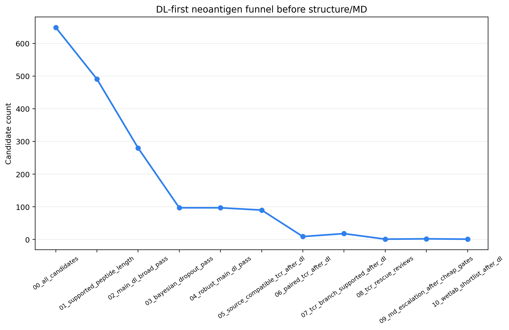
fig_md18_dl_first_candidate_funnel
PNG{kind=link}

fig_md19_dl_tcr_rescue_uncertainty
PNG
fig_md1_pipeline
PNG
fig_md20_baker_rosetta_fallback_scores
PNG
fig_md21_baker_contact_triage_map
PNG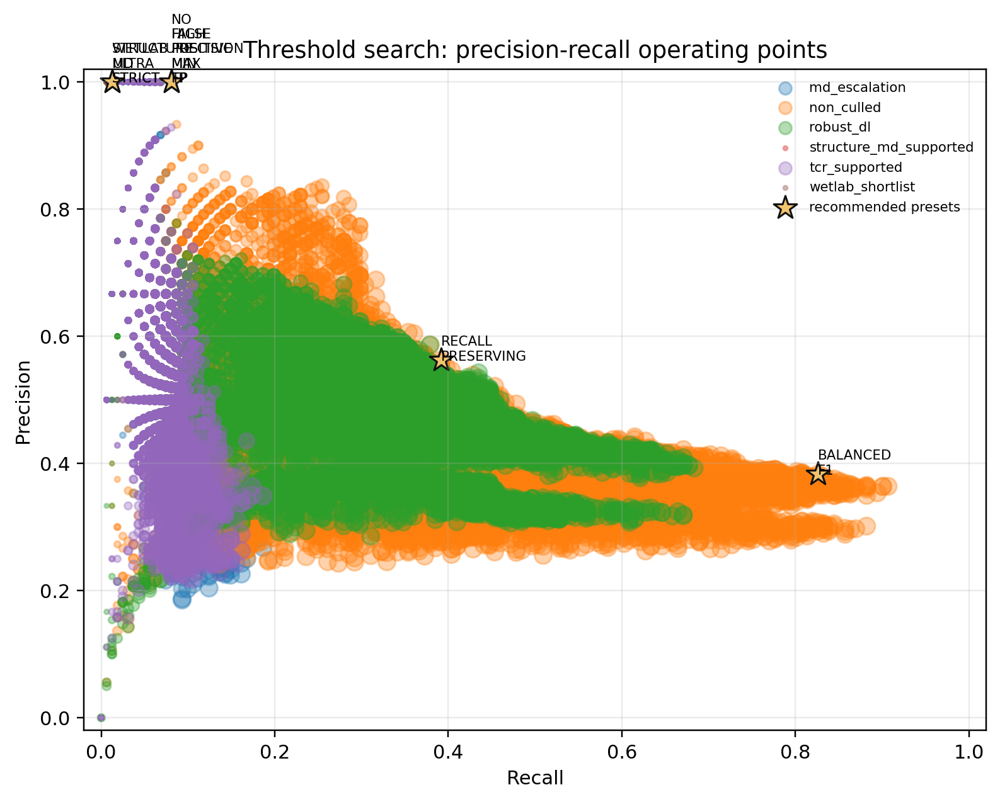
fig_md22_threshold_precision_recall_frontier
PNG{kind=link}

fig_md23_threshold_preset_confusion
PNG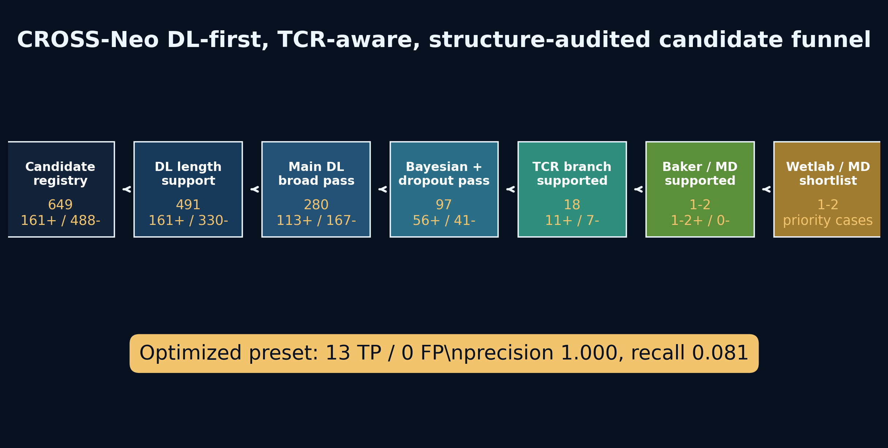
fig_md24_story_overview_flow
PNG{kind=link}
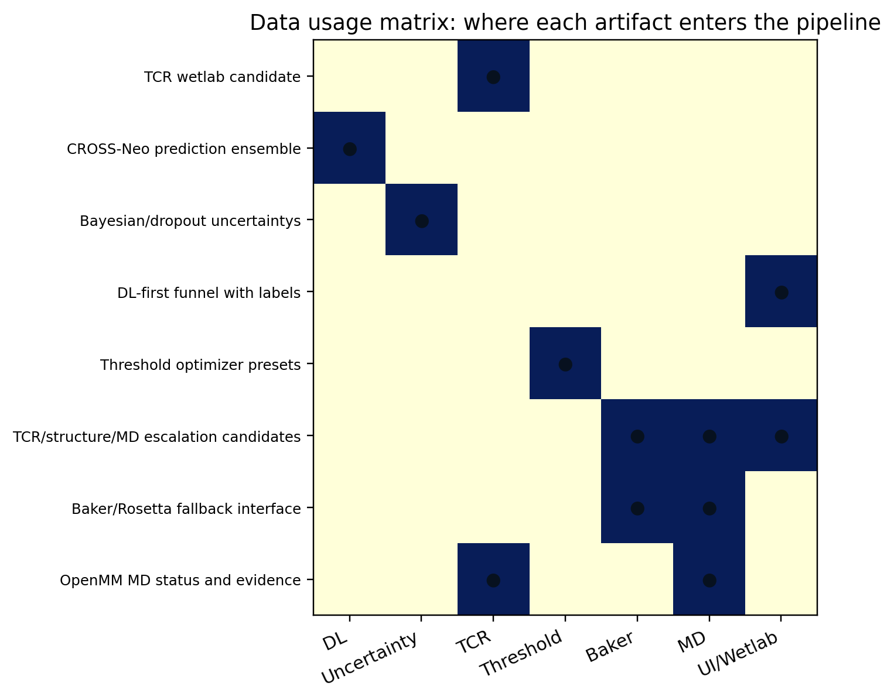
fig_md25_data_usage_matrix
PNG{kind=link}
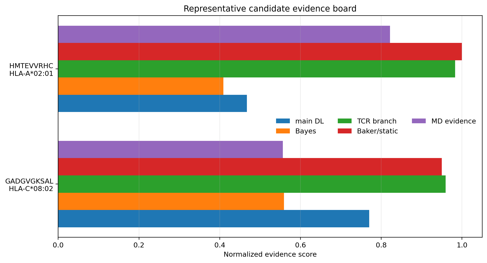
fig_md26_representative_candidate_board
PNG{kind=link}

fig_md27_no_fp_top13_candidate_evidence
PNG
fig_md28_source_stratified_preset_performance
PNG
fig_md29_claim_ladder
PNG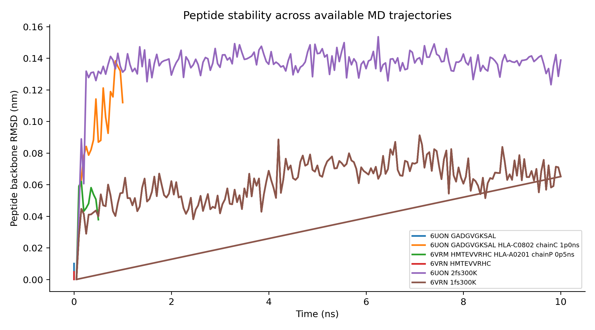
fig_md2_peptide_rmsd
PNG{kind=link}

fig_md30_wetlab_validation_workflow
PNG
fig_md31_immunogenicity_simulation_ladder
PNG
fig_md32_candidate_simulation_budget
PNG
fig_md33_assay_to_simulation_bridge
PNG
fig_md34_immunogenicity_simulation_readiness
PNG
fig_md35_two_lead_evidence_moat
PNG
fig_md36_specificity_lock_matrix
PNG
fig_md37_impact_upgrade_flow
PNG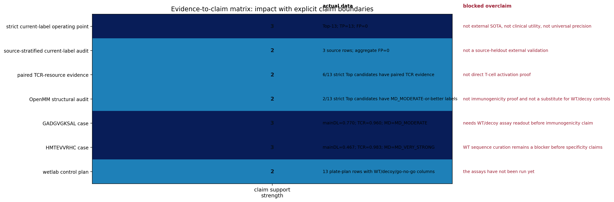
fig_md38_evidence_to_claim_matrix
PNG{kind=link}

fig_md38_reagent_order_sheet
PNG
fig_md39_control_coverage
PNG
fig_md3_pmhc_contact_heatmap
PNG
fig_md40_assay_go_no_go_ladder
PNG
fig_md41_reviewer_defense_moat
PNG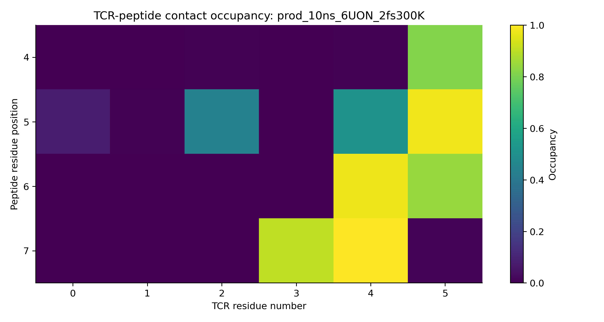
fig_md4_tcr_peptide_contact_heatmap
PNG{kind=link}

fig_md5_mutant_wt_interface_delta
PNG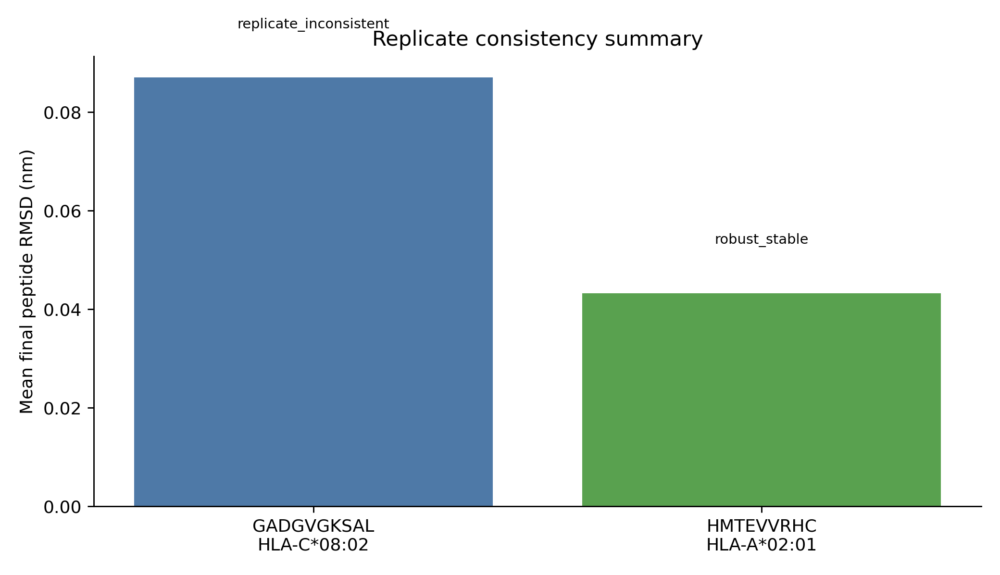
fig_md6_replicate_consistency
PNG{kind=link}
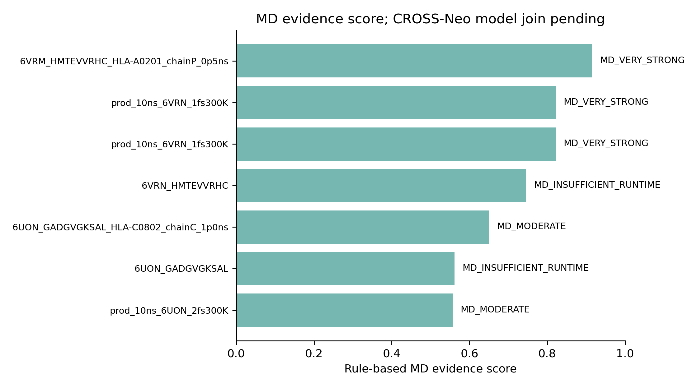
fig_md7_model_md_agreement
PNG{kind=link}

fig_md8_claim_boundary
PNG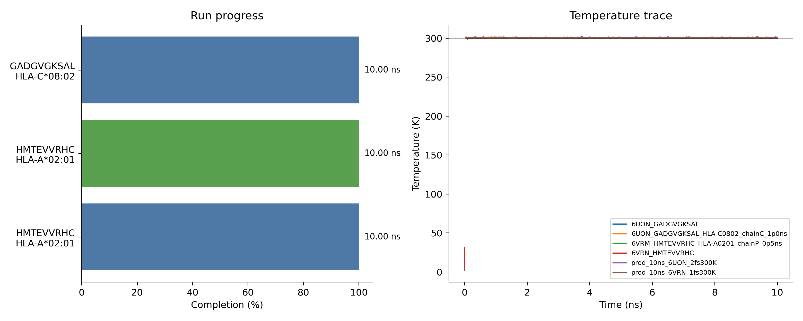
fig_md9_live_progress_temperature
PNG{kind=link}
Source Paths
/home/seungho/personal/THCA_data_analysis/project/results/cross_neo_md_audit_2026_05_10